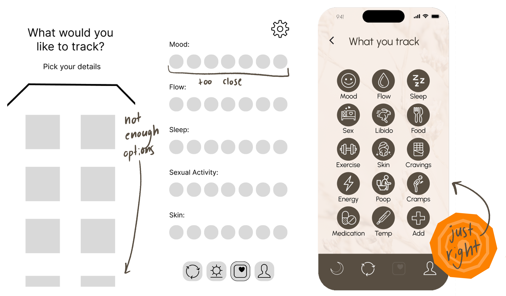

Our bodies are complex. Shouldn't our apps be complex to match?
Our concept for this app actually started when one of my teammates, Jane Lervik, mentioned how astonished she was to learn that eating a few extra carrots during her period could drastically reduce period pain. We were shocked as well.
And so were our users. They had no idea they could treat period symptoms with food or exercise and wanted to learn more but didn’t know where to turn.
I don't want to track flow. I want to track sleep.
All of our users mentioned having to use multiple apps to track their health and told us what features they liked and disliked about each one. Some liked the hyper-feminine look, some didn’t. What everyone could agree on was the more customizable the better so we worked on adding a fully customizable template to add any number of symptoms or functions you’re wanting to track for your personal health.
But I like pink! Then we'll make it fully customizable.
After a few more user tests we finalized our design to include a learning page that could give the user a more in-depth look at each phase in their 28-day cycle (did you know there are 4 phases?). A fully customizable data tracking section with the history for each point based on the 4 phases. And of course, color customizability, because if you want it pink we won’t stop you.


Need something
creative?
hit me up
Or keep this tab open forever, you'll come back to it later... right?
Jenn Alvin, Potential User